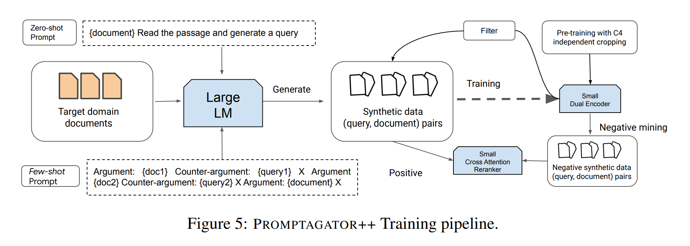
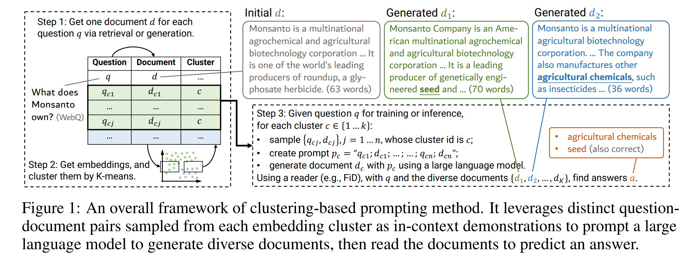
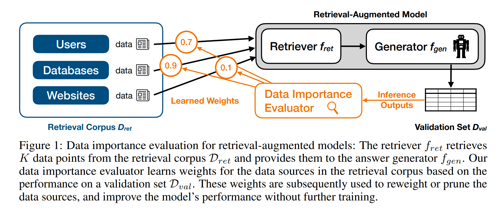
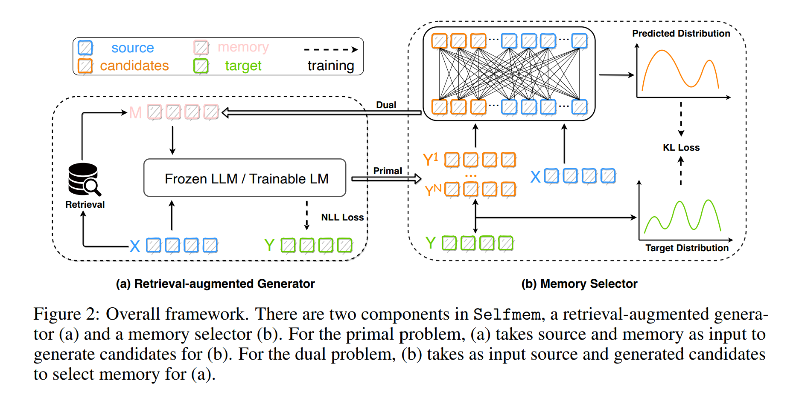
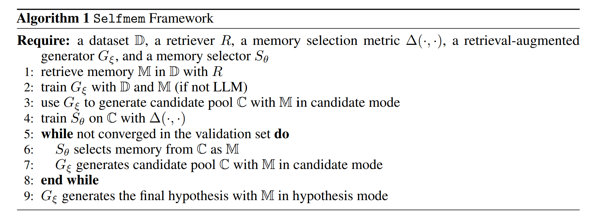
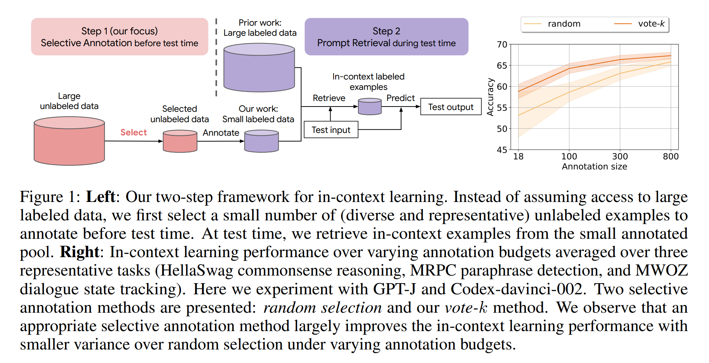

[论文阅读] RALM 2
这是第二篇有关检索增强语言模型 (Retrieval-Augmented Language Modeling)的笔记，这篇笔记记录的文章大多针对检索源和检索器的限制，提出了有效的改进或替代方法。
Promptagator: Few-shot Dense Retrieval From 8 Examples
paper: https://arxiv.org/abs/2209.11755
Motivation. 最近关于信息检索的许多研究都集中在如何从一个任务（通常具有丰富的监督数据）转移到其他各种检索任务上（监督数据有限），并隐含地假设可以从一个任务推广到其他所有任务。但它们忽略了一个事实： 对于不同的检索问题，都针对不同的搜索意图、queries和搜索域。
Framework. 由三部分组成：
-
prompt-based query generation：将特定于任务的少量示例输入给LLM，为中的所有文档生成query以得到合成示例；
-
round-trip filtering generated data：从所有未过滤的合成示例中训练一个初始检索器，然后对于给定的，让初始检索器检索与其最相关的k个文档，只有当d出现在这k个文档中时，才保留；
-
few-shot promptagator retriever：先使用Contriever在C4上预训练检索器，然后使用合成示例对其进行微调得到初始检索器，在一定epoch后应用round-trip filtering并继续在过滤的数据上微调检索器。

Generate rather than Retrieve: Large Language Models are Strong Context Generators
paper: https://arxiv.org/abs/2209.10063
code: https://github.com/wyu97/GenRead
Motivation. 知识密集型任务现在的主流方法是使用retrieve-then-read pipeline，但这些方法有三个缺点：1. 候选的文档是一个块（比如有100个单词），这可能包含与问题无关的噪声信息；2. 在双塔检索模型中，问题和文档的表示是独立获得的，导致它们之间只捕获了浅层的交互；3. 在大型语料库上检索文档需要先对所有文档进行表示与存储，这限制了检索器的参数。
论文提出了一个解决知识密集型任务的新视角，即用大语言模型生成器取代文档检索器。它首先提示一个大语言模型生成与给定query相关的上下文文档，然后读取生成的文档以预测最终答案。
Framework. 给出了两种设置：
-
Zero-shot setting.
Step 1. generate 提示LLM根据给定的问题生成上下文文档；
Step 2. read 使用生成的文档和输入的问题从LLM中生成答案。
-
Supervised setting.
Step 1. 使用LLM为每个问题生成一个上下文文档或使用无监督检索器从Wikipedia中检索一个文档；
Step 2. 对每个问题-文档进行编码，并使用k-means进行聚类；
Step 3. 从每个聚类中抽取n个问题-文档对，使用in-context learning生成一个上下文文档，共生成k个上下文文档。然后读取生成的k个文档来生成答案。

Improving Retrieval-Augmented Large Language Models via Data Importance Learning
paper: https://arxiv.org/abs/2307.03027
code: https://github.com/amsterdata/ragbooster
Motivation. 检索语料库在现实中很少是干净的(特别是如果底层数据来自网络)，且数据中的噪声和错误来源很难追踪的，针对这一数据质量问题，作者提出通过学习检索源的数据重要性来改进检索增强模型。
思想&贡献. 提出了一种基于多元线性扩展的算法来评估检索数据的重要性。在多元线性扩展中有指数级多的项，论文的一个关键贡献是提出了一种能在多项式时间内进行精确计算的算法，该算法在给定具有可加效用函数和验证集的检索增强模型的情况下，使用模型效用函数的多元线性扩展来精确计算检索语料库中数据的重要性。且进一步提出了一个更有效的近似算法。
数据重要性评估器会根据验证集上的性能来学习检索语料库中数据源的权重，这些权重随后被用来重新加权或修剪数据源，并在没有进一步训练的情况下提高模型的性能。
Lift Yourself Up: Retrieval-augmented Text Generation with Self-Memory
paper: https://arxiv.org/abs/2305.02437
code: https://github.com/hannibal046/selfmemory
Motivation. 许多研究都集中在如何更好地进行检索，但受到有限检索空间、有限内存以及语料库质量的影响，内存增强生成模型的潜力受到限制。
Framework. 提出的framework基于观察：在推理过程中与数据分布更相似的内存不是训练数据，而是模型自己在无界生成空间内的输出。
-
Retrieval-augmented Generator：
- 对于LLM， 使用标准的in-context learning格式给出(x, y)作为演示示例；
- 对于可微调的generator，仅保留top-1检索结果进行微调，考虑Joint-Encoder或Dual-Encoder generator的架构。
-
Memory Selector：最小化selector的预测和候选的得分之间的KL散度。
 
Selective Annotation Makes Language Models Better Few-Shot Learners
paper: https://arxiv.org/abs/2209.01975
code: https://github.com/xlang-ai/icl-selective-annotation
Motivation. In-context learning仅需要每个测试示例的几个注释示例，但通常假设所有带注释的训练数据都可以用于快速检索。论文研究了如何在保持in-context learning性能的同时降低人工注释成本。
Framework.
-
在测试前选择示例进行注释（选择具有多样性和代表性的示例），论文提出了Vote-k选择注释方法：这是一种基于图的方法，图G = (V, E)中的顶点v为所有未被注释示例的嵌入向量，对每个顶点v，基于cosine为它创建k条到它最近的顶点的边。定义L和U分别为已被注释的示例和剩下的示例的集合，每次迭代时，取得分最高的顶点将其从U移动到L（得分的计算公式为，其中），共运行M/10次迭代，然后使用L作为LLM的in-context learning示例，并为U中的每个示例生成预测。计算生成输出的平均对数概率作为模型的置信度得分，根据置信度得分将U划分为M个大小相等的桶，将前9M/10个桶中每个桶的具有最高得分的顶点添加到L中。
-
测试时从带注释的集合中检索一些示例作为每个测试示例的in-context示例。
